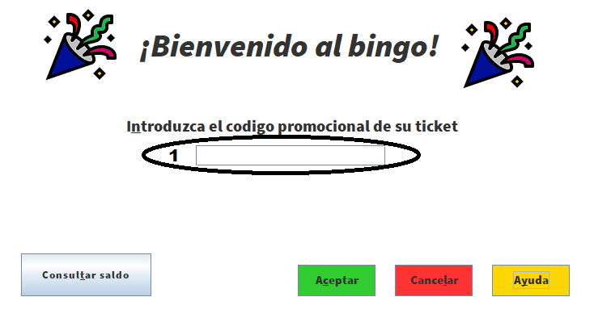

El funcionamiento de la aplicacion es muy sencillo, para comenzar deberemos introducir
el codgio EAN de nuestro ticket que nos permitira (debe ser de un valor mayor o igual a 30 euros,
en caso contrario nos informara), para validarlo debemos introducirlo en el area de texto (zona marcada
con un 1 en la imagen) y dandole al boton de siguiente si todo es correcto nos llevara a la ventana de juego
(en caso de que algo este mal nos informara el sistema) OJO un ticket superior a 30 euros nos dara derecho a UNA UNICA
partida, (un ticket de valor 90 euros no da opcion a 3 partidas o cartones solo a uno).

En la pantalla principal de juego, podemos encontrar:
Las normas del bingo son: El juego del bingo es muy sencillo, de un bombo se extrae una bola(en el nuestro al darle al boton de siguiente tirada, que tiene imagen de un bombo) con un numero aleatorio entre 1 y 30, si este numero se encuentra en nuestro carton de numeros(1) lo marcaremos (en el carton se activara el boton del numero que corresponda), si decidimos darle a siguiente tirada y resulta que tenemos un numero sin marcar en el carton el sistema nos avisara y nos permitira continuar y perder el numero o rechazar para marcar el numero. Si despues de varias tiradas tenemos una linea de numeros del carton marcada, se nos activara el boton "Cantar linea"(3), la cual nos permitira cantar una linea, (a lo largo de la partida podremos cantar un maximo de 2 lineas), y en caso de que tengamos todo el carton marcado, se nos activara el boton de "Cantar bingo"(4), que nos permitira cantar bingo y acabar la partida.
En esta version del juego del bingo tenemos un limite de 15 tiradas que cuando se acaben, finalizara la partida y se habilitara el boton "siguiente" que nos llevara a la siguiente ventana.
En nuestro bingo tambien incluimos una novedad, el "numero magico" en el carton podemos observar una casilla cuyo fondo es de color amarillo dorado, este es el numero magico el cual si cantamos una linea que lo incluya o bingo, optaremos a un premio adicional: un bono regalo de 20 euros.
IMPORTANTE: todos los premios (linea/bingo) deben ser cantados inmediatamente despues de que se haya marcado el numero en el carton que da derecho a dicho premio, en caso de que se continue sin reclamar dicho premio, este no se computara a la hora de reclamarlo.